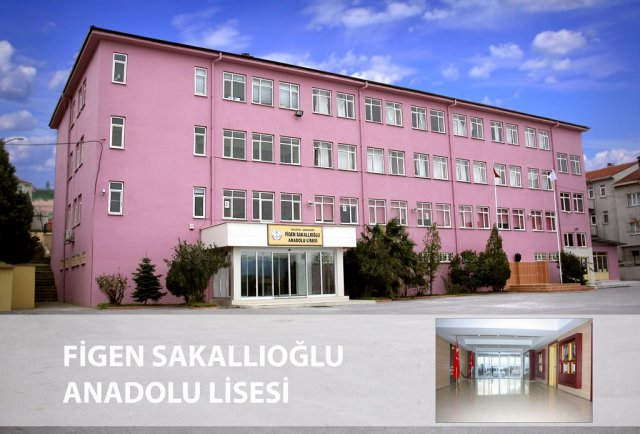
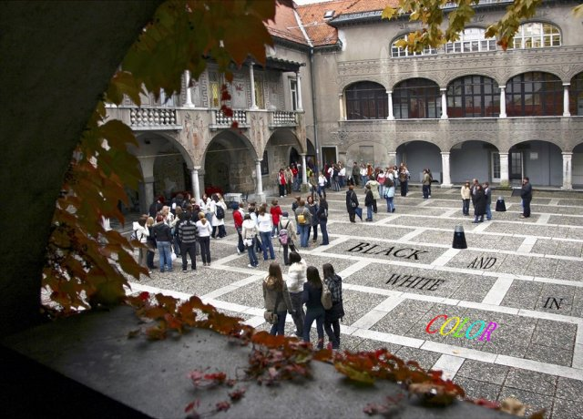
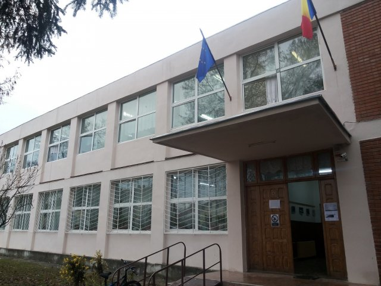
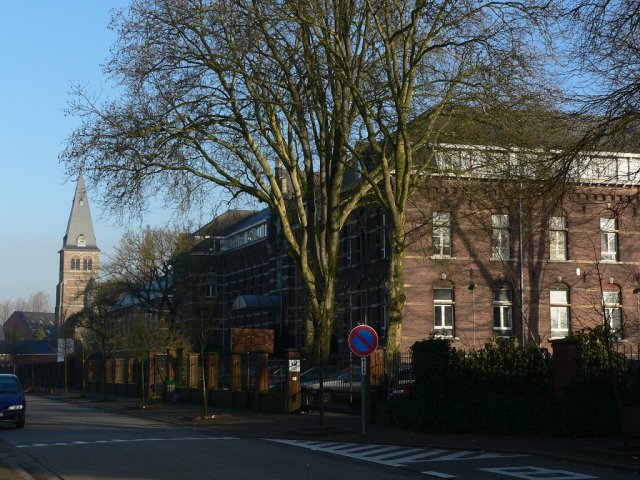

Figen Sakallıoğlu Anadolu Lisesi
Turkey
Figen Sakallıoğlu Anadolu Lisesi is a public school that gives general secondary education. It started teaching in 1994. We teach to 550 students who are accepted to school after passing an examination.
In our syllabuses there are science classes. Students learn Biology, Maths, Chemistry, Physics. They also have Art, English, Literature, Philosophy and PE classes.

Srednja šola za oblikovanje in fotografijo
Slovenia
Srednja šola za oblikovanje in fotografijo Ljubljana is situated in the heart of Slovenia, more precisely in its capital city Ljubljana. The school was founded 70 years ago and has since moulded young girls and boys into creative and daring young artists. At present, the school is home to 65 teachers and 700 students. We offer five different programmes, i.e. graphic design, industrial design, fashion design, photography and art grammar school.

Colegiul Auto Traian Vuia
Romania
“Colegiul Auto Traian Vuia” is a technical secondary school in Târgu Jiu, Romania. It has about 1600 students who study technical discipline, like Environment Protection, Mechanics, Textile Industry and Joinery. Our students are constantly involved in many activities outside classes, local, national competitions, or intercultural projects such as “Spring day”, “Kangourou”, “Futurenergia” etcetera.

WICO Campus Mater Dei Overpelt
Belgium
very school year, 145 staff members welcome 950 to 1000 pupils at our school Wico campus Mater Dei. Most pupils are 12 years old when they start school. They finish secondary school at the age of 18.Youngsters who love languages, boys and girls who have a real knack for sciences or mathematics, artistic pupils, pupils with great social skills and also those who have great practical skills... they can all find a suitable education at Mater Dei.